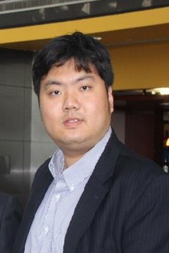

RTIMA2013
Real-Time Mining and Analytics for Big Data
To be held in conjunction with 2013 IEEE International Conference on Big Data, Silicon Valley, USA, October 6-9, 2013
Workshop Chairs:
Dr. Jian Guo Harvard Unviersity, USA Email: bayesso@gmail.com |
 |
| Dr. Jian Guo is an assistant professor of computational statistics in Department of Biostatistics at Harvard University. He obtained his Ph.D. in Statistics from the University of Michigan. Dr. Guo’s research area includes large-scale network modeling, machine learning and internet data mining. He has published about 20 papers in top journals and conferences in statistics and computer sciences. | |
Dr. Yong Zhao University of Electronic Science and Technology of China, China Email: yongzh04@gmail.com |
 |
| Dr. Yong Zhao is a professor at the School of Computer Science and Engineering, University of Electronic Science and Technology of China, and deputy director of Big Data Processing Center at Tsinghua University. Before joining the university, he worked at Microsoft on Business Intelligence projects that leveraged Cloud storage and computing infrastructure. He obtained his Ph.D. in Computer Science from The University of Chicago under Dr. Ian Foster's supervision, and was the key designer of the Swift parallel scripting system. Swift is a programming tool for fast, scalable and reliable loosely-coupled parallel computation. Yong has published more than 30 papers in top journals and conferences, which are referenced more than 2000 times by other scholars and researchers. Yong's research areas are in cloud computing, many-task computing, and data intensive computing. He is especially interested in providing resource management, workflow management, high level language and scheduling support for large scale computations in Cloud and Grid environments. Yong is a member of ACM, IEEE and CCF. | |
Dr. Dou Shen Baidu Inc., China Email: doushen@live.com Web: http://doushen.org |
|
| Dr. Dou Shen is a director of Baidu Inc., the largest search engine in China. Before joining Baidu, Dr. Shen was a senior director at CityGrid and was the co-founder of Buzzlabs. He joined Microsoft adLabs as an Applied Researcher in 2007. During his stay in adLabs and was promoted to research program manager in 2009. Dr. Shen got his Ph.D. from Hong Kong University of Science and Technology (HKUST) in 2004 – 2007, where he led a team participating KDDCUP 2005, the most rigorous annual competition in the field of machine learning and data mining. His team won all three prizes set up by the KDDCUP organizers and this is the first time that the same team won in all categories. Dr. Shen have published over 30 journal and conference papers and invented about 10 patents. He is serving on the program committees for all the major conferences in the field (KDD, SIGIR, WWW, WSDM, AAAI, SDM, ICDM). | |